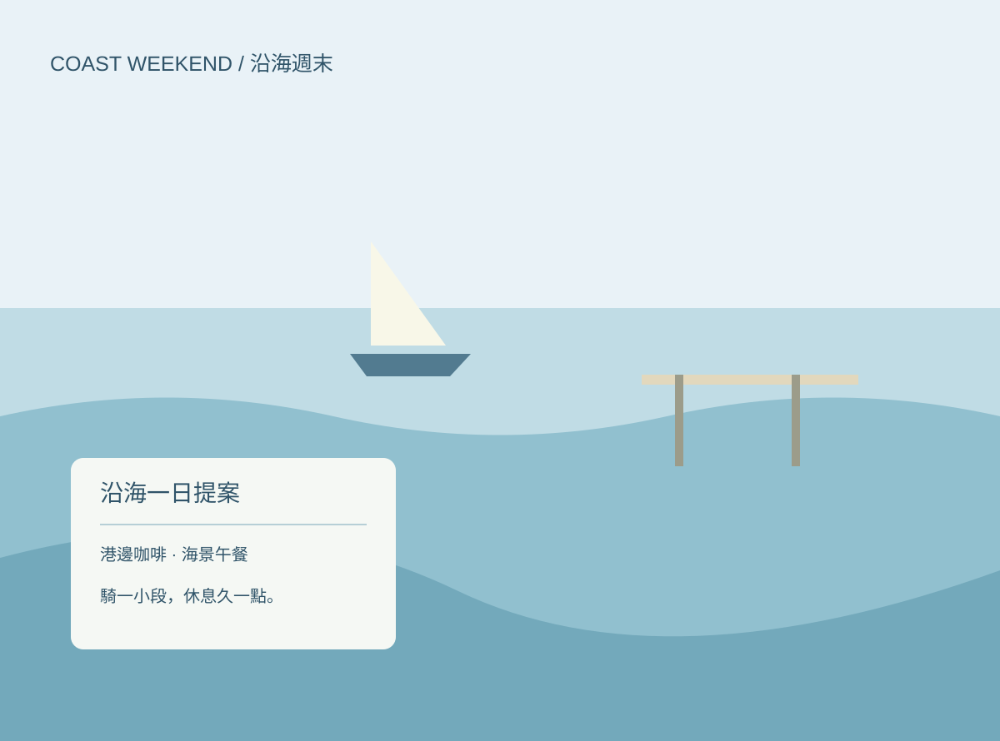

摩登輕旅行・海岸藍
找一個靠海的地方，安排一頓喜歡的午餐。路線簡單，週末就輕鬆。

交通簡單，空間留給喜歡的事。
簡單安排，輕鬆出發
選擇喜歡的風景，再找一間想去的店。每條路線都保留自由時間，吃飯、走路、休息，照自己的節奏來。
三條路線，各有重點。
先到港邊喝杯咖啡，再散步去午餐。
以海景為主角，預留坐下來休息的時間。
沿著海岸輕鬆騎，想停就停。
把週末空出來
想看海、想搭車，還是只想換個地方吃午餐？從一條簡單的路線開始。